TouchDesigner и визуальное программирование
В TouchDesigner проект строится как сеть операций. Камера может дать изображение, микрофон звуковой сигнал, контроллер числовые значения. Сеть обрабатывает их и формирует графику, звук или команды другим приложениям. Результат можно наблюдать по мере изменения данных.
Среда подходит для интерактивных инсталляций, генеративной графики, сценических систем и визуализации. Возможность соединить источники не означает, что любой датчик подключится автоматически: нужны поддерживаемый интерфейс и понятный формат данных.
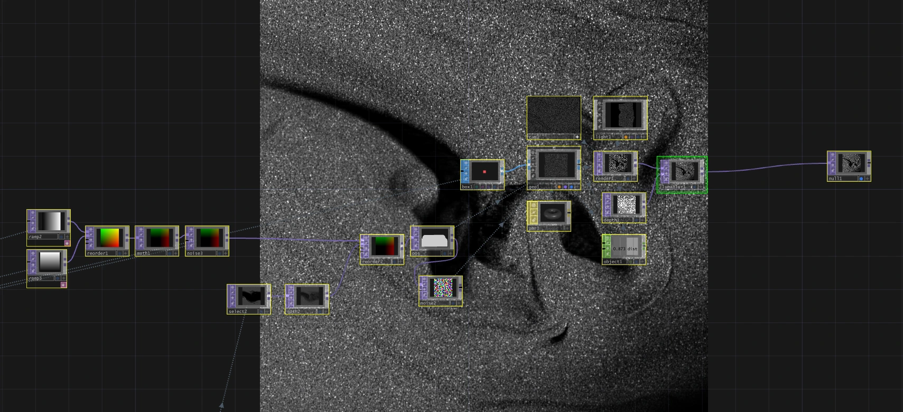
Что можно создавать
В одном проекте можно совместить видео, трёхмерную сцену, звук и сетевые сообщения. Например, инсталляция получает положение посетителя, преобразует расстояние в числовой параметр и меняет масштаб графики. Часть системы управляет изображением, другая сохраняет текущее состояние.
| Задача | Какие данные нужны | Возможный результат |
|---|---|---|
| Генеративная графика | Время, параметры, случайные значения | Изменяющиеся формы и композиции |
| Аудиореактивный визуал | Звук и его характеристики | Графика, связанная с музыкой |
| Интерактивная инсталляция | Действия и присутствие посетителей | Изображение и поведение среды |
| Визуализация | Таблица или поток измерений | Наглядное представление данных |
| Сценический проект | Команды оператора, звук, движения | Согласованные изменения медиасреды |
Ролик показывает итог, но не всегда раскрывает техническую реализацию. По внешнему виду нельзя достоверно определить, создана ли работа в TouchDesigner. Эти примеры помогают обсуждать задачи и визуальные решения; конкретный стек нужно уточнять у авторов.
Начало работы
Для знакомства подходит TouchDesigner Non-Commercial. Это бесплатная редакция для некоммерческого использования, а не временная пробная версия. Разрешение изображения ограничено 1280 × 1280, часть операторов коммерческих и Pro-редакций недоступна. Актуальные условия и установщик доступны на сайте Derivative.
Рабочая область показывает сеть операторов. Панель параметров относится к выделенному оператору, viewer позволяет видеть его результат, временная шкала задаёт контекст воспроизведения. Сначала научитесь различать сеть, параметры и изображение результата.
Оператор, соединение и параметр
Оператор, или нода, выполняет конкретную операцию. Соединение передаёт данные, а параметр задаёт, как их обработать. У генератора может не быть входного провода: он создаёт данные сам. Поэтому правило «у каждой ноды есть вход и выход» неточно.
Провода также не являются единственным способом связи. Оператор может ссылаться на другую ноду или получать значение через выражение и экспорт. Когда параметр меняется неожиданно, проверяйте его режим управления.
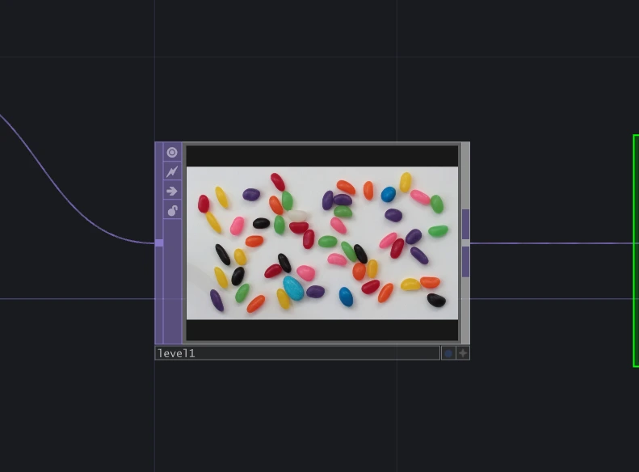
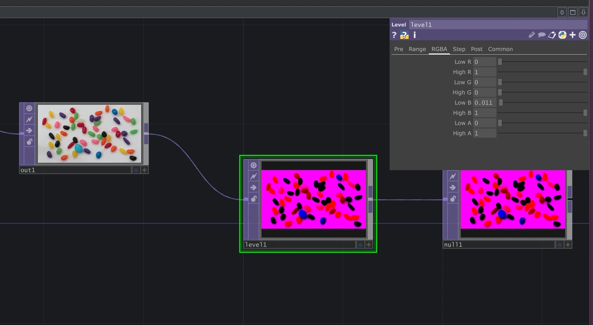
Семейства операторов
Семейства различаются типом данных и назначением. Вначале полезнее понять эти различия, чем запоминать длинный список нод.
| Семейство | Назначение |
|---|---|
| TOP | Изображения и текстуры: видео, эффекты, композитинг |
| CHOP | Числовые каналы: звук, движение, управление |
| SOP | Точки и геометрия, традиционные операции с 3D |
| POP | Обработка точек и других примитивов на GPU в современных версиях |
| DAT | Текст, таблицы и скрипты |
| MAT | Материалы для рендеринга |
| COMP | Компоненты: интерфейсы, камеры, контейнеры и модули |
В старых скриншотах ниже нет вкладки POP. Она появилась в более новых версиях. Для первых цепочек достаточно TOP и CHOP; к геометрии и материалам можно переходить после понимания потока данных.
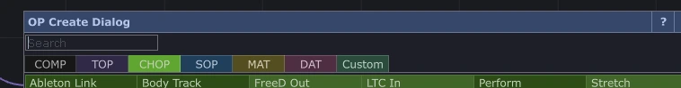
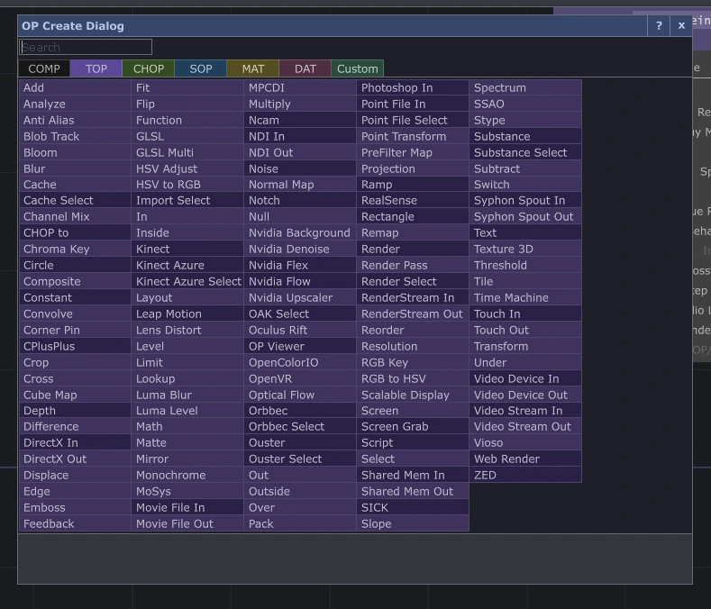
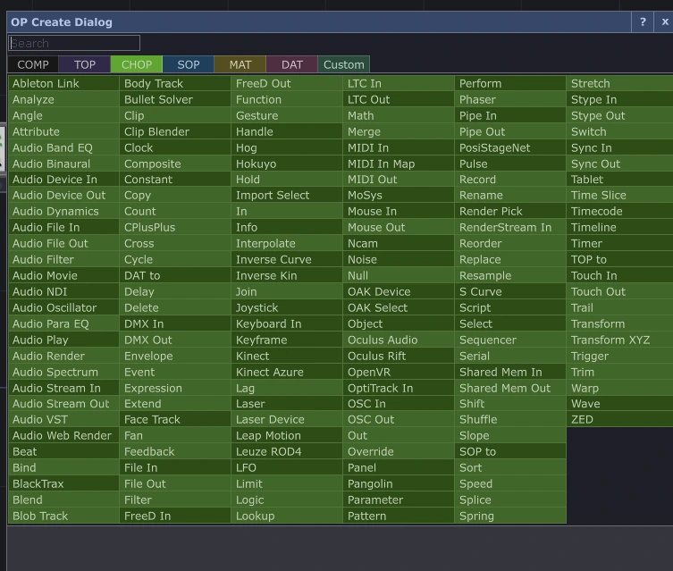
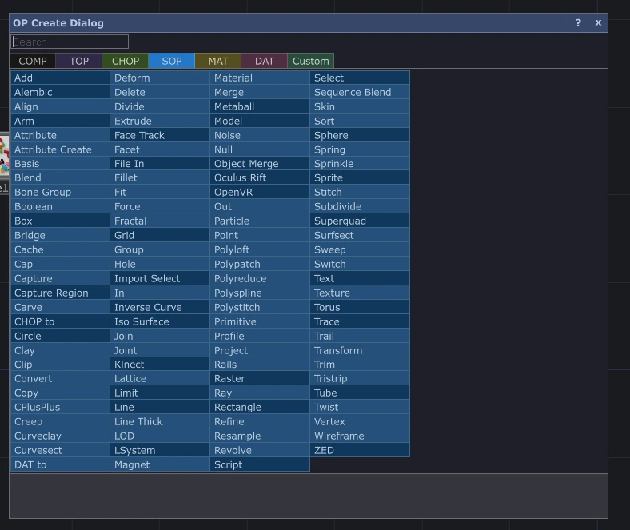
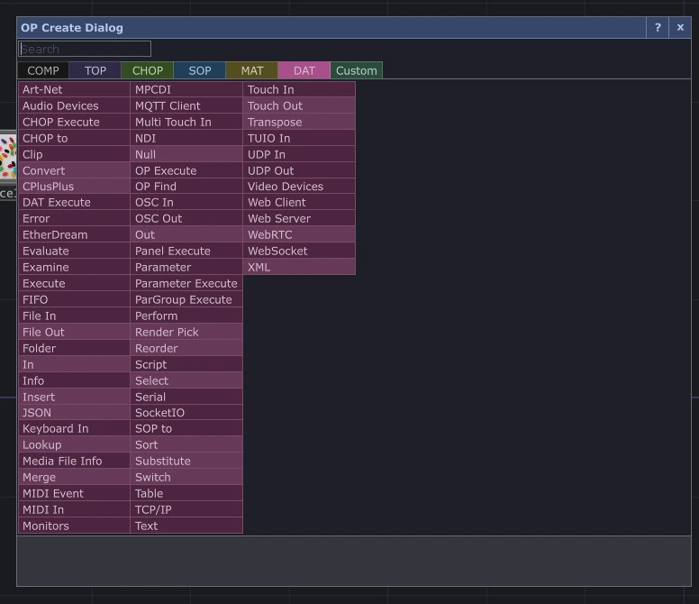
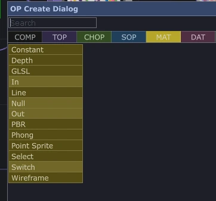
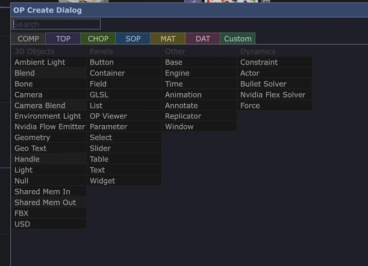
Как читать сеть
Начните с источника и двигайтесь к результату. Смотрите, какой тип данных передаётся на каждом этапе. Числовой канал нельзя просто подключить к изображению как видеопровод: нужно использовать его для управления параметром или преобразовать подходящим оператором.
Null удобно использовать как обозначенный выход цепочки. Он не исправляет данные, но даёт стабильную точку, на которую ссылаются другие части проекта. Называйте её по назначению: out_image, out_control.
Ошибка обычно локализуется на конкретном участке: нет входа, неверный путь, неподходящий тип данных, диапазон значения или тяжёлая обработка. Проверка промежуточных результатов полезнее случайного изменения всех параметров.
Три базовые цепочки
Обработка изображения
Movie File In TOP читает файл, Level TOP меняет характеристики изображения. Если результат слишком тёмный или цвет неожиданно изменился, сравните вход и выход Level. Так видно, какая операция дала изменение.
Движение от числового сигнала
LFO создаёт периодический сигнал. Math переводит его в нужный диапазон, например из −1…1 в 0.2…0.8. Выходным каналом можно управлять масштабом изображения. Важна не сама нода, а смысл числа: координата, яркость или скорость требуют разных диапазонов.
Реакция на звук
Для простой реакции можно оценить амплитуду сигнала через Analyze CHOP, преобразовать диапазон и сгладить движение Lag CHOP. Проверяйте выбранную функцию анализа и величину сигнала. Если нужна реакция на отдельные частоты, используется спектральный анализ, а не только общая громкость.
Режимы параметров
У параметра есть четыре режима: Constant, Expression, Export и Bind. Они отвечают на вопрос, откуда берётся значение. Это не четыре произвольных способа экспорта из CHOP или DAT.
| Режим | Откуда берётся значение |
|---|---|
| Constant | Задано вручную |
| Expression | Вычисляется выражением |
| Export | Поступает из экспортируемого CHOP-канала |
| Bind | Связано с другим параметром или каналом |
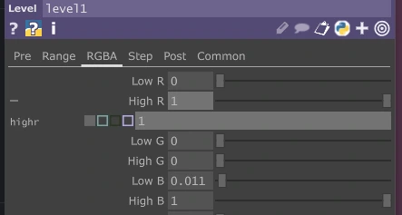
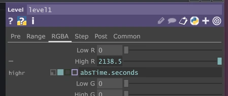
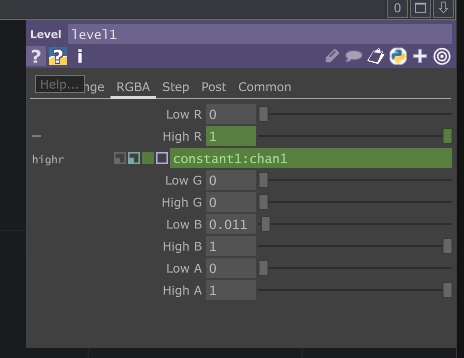
Например, выражение absTime.seconds использует абсолютное время. В отличие от положения временной шкалы оно продолжает расти при работе приложения. Для управляемого движения обычно нужно преобразование: ограничение, периодическая функция или нужный диапазон.
Состояние и структура проекта
Поток чисел ещё не является сценарием. Если система должна помнить выбранный режим, число участников или завершённый этап, эту логику нужно задать отдельно. Разделите проект на входы, обработку, состояние и выходы; объединяйте крупные части в компоненты.
Для интерактивного зеркала можно предусмотреть ожидание, активное взаимодействие и возвращение в ожидание. При временной потере человека в кадре полезен небольшой период ожидания перед сбросом. Здесь сценарная логика определяет поведение графики.
Производительность и показ
Работа в реальном времени ограничена вычислительными ресурсами. Разрешение текстур, число объектов и цепочки эффектов влияют на нагрузку. Проверяйте скорость на целевом компьютере; не переносите выводы из маленького предпросмотра на многоканальную установку.
Подготовьте понятные выходы и управление для оператора. Если проект должен работать без автора, нужен способ запуска, восстановления после потери сигнала и проверки входных устройств.
Справка и примеры
Обычная справка объясняет назначение оператора, Python-справка его программный интерфейс. OP Snippets показывает небольшие рабочие сети и помогает увидеть связь параметров с результатом. Это удобнее, чем копировать большой патч, не понимая его частей.
Официальные материалы: установщик, семейства операторов, параметры, OP Snippets, POP, Non-Commercial. Русскоязычные материалы из прежней лекции: плейлист по TouchDesigner и TD Far East.
Базовый навык в TouchDesigner состоит в том, чтобы проследить данные от источника до результата и объяснить, зачем в этой цепочке нужна каждая операция.